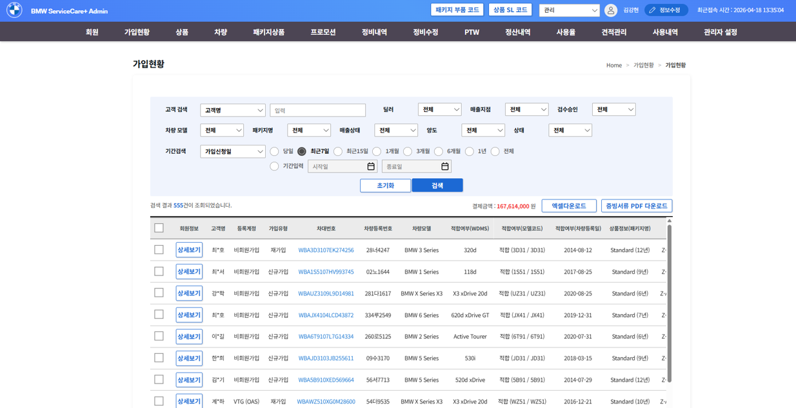

앱 안에서 끝나게 만들고 예외를 먼저 닫았습니다
문제
- 가입하려면 앱을 빠져나와 별도 웹으로 이동해야 해서 중간에 이탈이 생기던 구조
- 가입 조건과 결제 수단, 환불 기준이 채널마다 따로 적혀 있어 같은 상품인데 설명이 갈리던 상태
- 결제 콜백이 중복으로 들어오면 같은 건이 두 번 잡히는 문제가 간헐적으로 재현되던 점
접근
- 앱 안에서 가입과 결제가 한 번에 끝나는 채널을 새로 정의하고 앱 연동 구조를 기획
- 가입 조건과 결제 수단, 환불 기준을 한 벌의 정책으로 정리해 채널이 늘어도 한 곳만 고치도록 구성
- 중복 결제는 재현 조건을 먼저 만들어 원인을 특정하고 같은 요청을 한 번만 처리하는 차단 구조를 설계
실행
- 제휴사와 계열사 포인트를 결제 수단으로 받도록 범위를 확장
- 두 달 치 약 30만 건을 전후 비교해 변경이 실제로 숫자를 움직였는지 확인
가입 30% 증가매출 30% 증가중복 결제 100% 제거
실제 화면

SK렌터카에서라면 견적에서 계약까지 단계별로 몇 명이 빠지는지부터 세겠습니다. 그다음 가장 많이 빠지는 한 구간의 예외 경로를 먼저 보겠습니다.